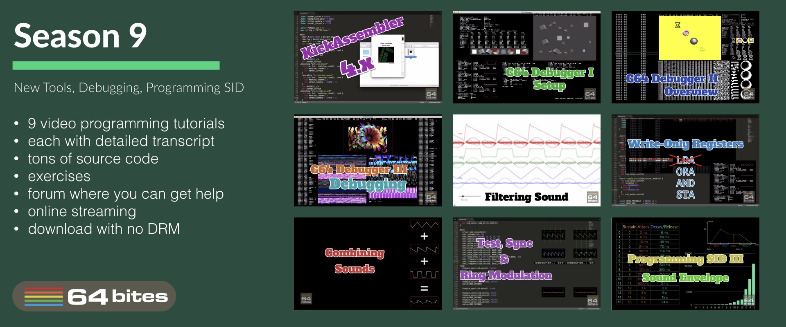
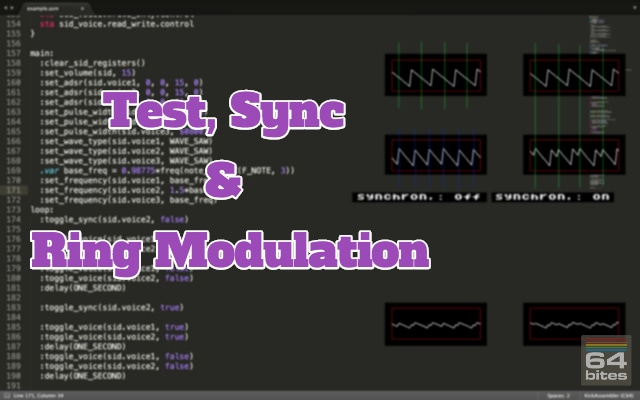
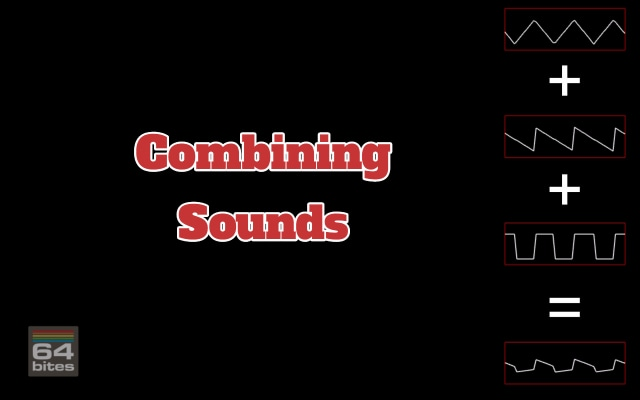
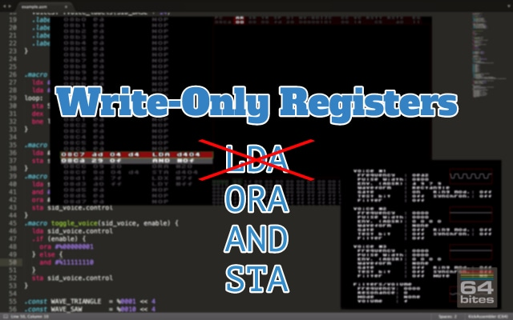
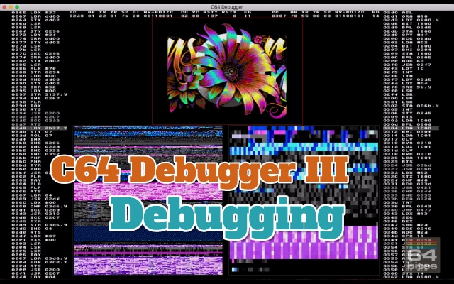
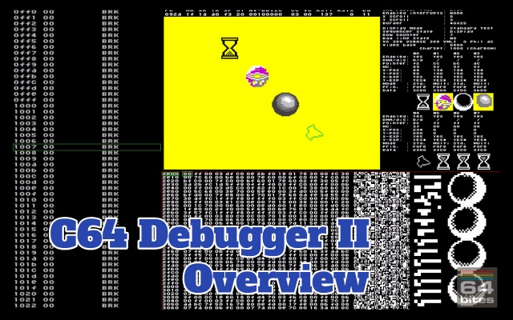
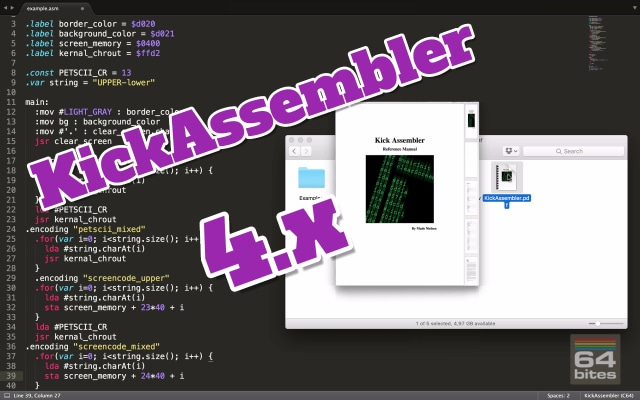

The easiest way to start programming Commodore 64
Learn BASIC and 6502 Assembly with bite-sized video tutorials.
Binge-watch previous episodes today!
Season 9 - New Tools, Debugging, Programming SID
Here's what you will get
- 9 videos (50+ minutes in total)
- transcripts (13000+ words)
- source code examples (10000+ LOC)
- access to 64bitesVIP Facebook group, where you can get help
- plenty of exercises to solve on your own
- online streaming
- download with no DRM
- one time payment (no monthly/annual fees)
See what others are saying!
I learned assembly the hard way, with only limited documentation. Although part of the fun is in discovering all these things yourself, I think such screencasts could have helped me in getting up to speed faster. They do contain some nice bits of information :)

- Paul Koller
Game Developer, Creator of C64anabalt, Super Bread Box and Micro Hexagon
64bites brings me closer to understanding a computer I learned to love long ago, and still do. More than anything, it is really fun to follow the lessons and I always look forward to the next episode with great anticipation. It is the best thing since chocolate.

- Sebastian Kostka
Online Marketing Wizard at MeMyselfAndUs
I enjoyed both narration and realisation.
Actually, I was really shocked to have so much fun watching a programming screencast!

- Robert Lapinski
CEO of Idea Head, Mastermind behind the Pixel Magazine
How much time did you spend playing games on your Commodore c64? 64bites is more than 8-bit childhood memories, its a way to keep your beloved C64 alive, let's make our own game with it.

- Andrzej Śliwa
Polyglot Programmer, Lead Developer at bonusbox GmbH
This is really cool. I don't know exactly how popular it will end up being, but there is always room online for things like this.

- Peter Cooper
Founder at Cooper Press, Chair of O'Reilly Fluent Conference
Having watched a few episodes, I reiterate my original position: sooooooo coool. And Michal have really done a top-notch job on writing, production, audio, everything.

- Avdi Grimm
Creator of the best selling programming screencast series - RubyTapas
All Episodes in this Season
Episode #081 - Filtering Sound
We can create new waveforems not only by adding pure tones together. We can also start with complex sounds, like saw or a rectangle wave and subtract different frequencies from them. This is the basic priciple behind filtering sounds. And the best part? It's a built-in feature of the SID chip!
Episode #080 - Test, Sync & Ring Modulation
Today we will learn how to synchronize SID voices using the test bit and hard-sync functionality. We will also use the ring modulation to... create sick bass drops for Dub Step. 
Episode #079 - Combining Sounds
Up until now, we've been using only the first one of three voice of the SID chip. But if we use all three voices simultaneously, we can play songs with chords, simulate multiple instruments, or play sound effects in games while the music is playing. 
Episode #078 - Write Only Registers
Most SID registers are write-only. It means that we can't use the usual read-modify-store construction to update just part of a register. The most common technique to deal with this problem is to employ so-called shadow registers. And that's what we are going to learn today! 
Episode #077 - Programming SID III - Sound Envelope
We already know how to play sounds using the SID chip. Today we are going to learn how to make them more interesting by changing attack, decay, sustain and release registers, which define a so-called sound envelope.
Episode #076 - C64 Debugger III - Debugging
It's about time to get the most of the C64 Debugger! In this episode you will learn - how to load any demo, - use snapshots to quickly jump to interesting moments, - stop the excution at any time, - step over instructions, subroutines, cycles and - set breakpoints on program counter, memory write, interrupts and raster positions. 
Episode #075 - C64 Debugger II - Overview
In this episode we will learn how to use basic features of the C64 Debugger. Memory map allows us to quickly notice patterns in the running program. Disassembly view allows us to locate the program counter and modify the code on the fly. Memory dump view can help us edit raw data and shows memory as sprite or character bitmaps. Finally we get familiar with status views of VIC-II, SID and both CIA chips. 
Episode #074 - C64 Debugger I - Setup
Today we are going to take a look at one of the most powerful programming tools for Commodore 64. The C64 Debugger by Slayerek. Even though it's not even a 1.0 release, it already has plenty of features that can make programming, debugging or examining programs so much easier.
Episode #073 - KickAssembler 4.x
Some time ago a new version of the Kick Assembler compiler had been released with a plenty of new features. Today we are going to take a closer look at some of those features. We will also figure out how to update our existing source code to the new version. 